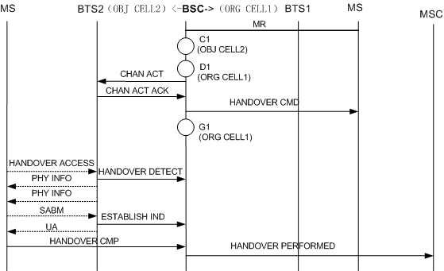
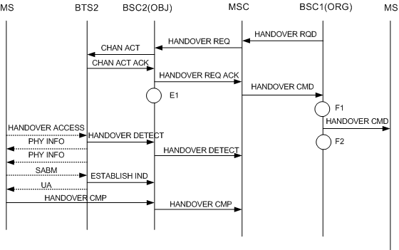

H371A:CELLCELL_OUTCELL_CMD_UL_QLTY
H371B:CELLCELL_OUTCELL_CMD_DL_QLTY
H371C:CELLCELL_OUTCELL_CMD_UL_RXL
H371D:CELLCELL_OUTCELL_CMD_DL_RXL
H371E:CELLCELL_OUTCELL_CMD_TA
H371F:CELLCELL_OUTCELL_CMD_BETTER_CELL
H371G:CELLCELL_OUTCELL_CMD_LOAD
H371H:CELLCELL_OUTCELL_CMD_RAPID_LEV_DROP
H371I:CELLCELL_OUTCELL_CMD_MSC_INTERVENTION
H371J:CELLCELL_OUTCELL_CMD_OM_INTERVENTION
H371L:CELLCELL_OUTCELL_CMD_OTHER
H371M: CELLCELL_OUTCELL_CMD_DUBAND_OUTTER_INNER
H371N: CELLCELL_OUTCELL_CMD_DUBAND_INNER_OUTTER
H371O: CELLCELL_OUTCELL_CMD_DUBAND_INNER_USER_MOVE
This measurement provides the number of outgoing inter-cell handover commands. Along with Failed Cell Outgoing Handovers, this counter indicates the performance of outgoing inter-cell handovers. Along with the counters related to the outgoing inter-cell handover, this counter indicates the performance of inter-cell handovers.
The handover cause can be uplink quality, downlink quality, uplink strength, downlink strength, timing advance, better cell, load, rapid level drop, MSC intervention, OM intervention, EDGE coverage, underlaid to overlaid subcell handover in Enhanced Dualband Network,overlaid to underlaid subcell handover in Enhanced Dualband Network,MS handover in the overlaid subcell covered by the Enhanced Dualband Network,or other causes.
Integer number or integer.
If the originating cell and the target cell are GSM cells, this counter is measured in the following situations:
1. In the internal inter-cell handover procedure, after receiving a Measurement Report, the BSC detects that the MS needs to be handed over to another cell in the BSC. Then, the BSC sends a Channel Activation message to BTS2 in the target cell to activate the channel. If the channel type is correct after BTS2 receives the Channel Activation message, BTS2 switches on the power amplifier on the specified channel to receive the uplink message, and sends a Channel Activation Acknowledge message to the BSC. After receiving the Channel Activation Acknowledge message from BTS2, the BSC sends a Handover CMD message to BTS1, and the specific counter is incremented by one based on the handover causes at G1, as shown in the following figure. The handover cause can be Uplink Signal Quality, Downlink Signal Quality, Uplink Signal Strength, Downlink Signal Strength, Timing Advance, Better Cell, Load, Rapid Level Drop, MSC Intervention, OM Intervention, EDGE Coverage, Underlaid to Overlaid Subcell Handover in Enhanced Dualband Network,Overlaid to Underlaid Subcell Handover in Enhanced Dualband Network,MS Handover in the Overlaid Subcell Covered by the Enhanced Dualband Network,or other causes.

2. In the intra-BSC handover procedure, after receiving a Handover REQ ACK message, the MSC sends a Handover CMD message to BSC1. Then, BSC1 sends the MS the Handover CMD message, requesting the MS to access the new channel, and the specific counter is incremented by one based on the handover cause at F2, as shown in the following figure. The handover cause can be Uplink Signal Quality, Downlink Signal Quality, Uplink Signal Strength, Downlink Signal Strength, Timing Advance, Better Cell, Load, Rapid Level Drop, MSC Intervention, OM Intervention, EDGE Coverage, Underlaid to Overlaid Subcell Handover in Enhanced Dualband Network,Overlaid to Underlaid Subcell Handover in Enhanced Dualband Network,MS Handover in the Overlaid Subcell Covered by the Enhanced Dualband Network,or other causes.

This is an original counter without involving any formula.